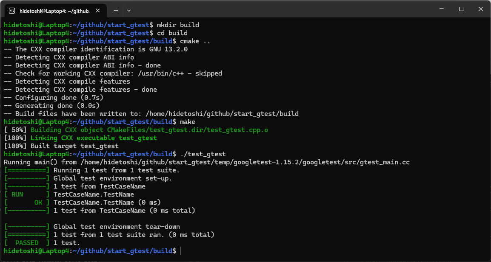
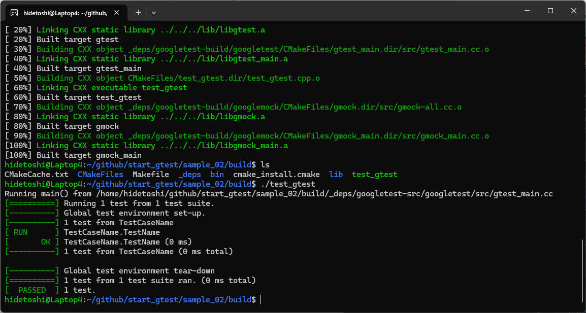

2. GoogleTest の使い方
2-1. 簡単に GoogleTest する
まずは簡単にちゃんと Google Test をインストールできたかを確認したいと思います。
今回試すコードは以下のような感じです。
["test_gtest.cpp"]
#include <gtest/gtest.h>
TEST(TestCaseName, TestName){
EXPECT_EQ(1, 1);
}
下記コマンドを入力してビルドします。
$ g++ test_gtest.cpp -o test_gtest -lgtest_main -lgtest
下記コマンドを入力してテストを実行します
./test_gtest
実行結果を下図に示します。

2-2. cmake を使ってみる
2-1._簡単に_Google_Test_する の内容を cmake を使ってビルドしてみます。cmakeを使ったビルドの設定は CMakeLists.txt というテキストファイルに記述します。ディレクトリの中身は次のようになります。
./ ├ CMakeLists.txt └ test_gtest.cpp
CMakeLists.txt の内容は次のようになります。
["CMakeLists.txt"]
# CMake のバージョンを設定
cmake_minimum_required(VERSION 3.13)
# プロジェクト名と使用する言語を設定
project(test_gtest CXX)
# GoogleTest requires at least C++14
set(CMAKE_CXX_STANDARD 14)
# test_gtest という実行ファイルを test_gtest.cpp から作成
add_executable(test_gtest test_gtest.cpp)
# gtest_main, gtest をリンクします
target_link_libraries(
test_gtest
gtest_main
gtest
)
この状態で以下のようにコマンドを入力します。
$ mkdir build $ cd build $ cmake .. $ make $ ./test_gtest
実行結果の画面です。

2-3. GoogleTest を最小限の手間で導入
記事 cmakeプロジェクトにGoogleTestを最小限の手間で導入する #C++ - Qiita による手順に従うと、GoogleTest を事前にインストールしておかなくても cmake できるらしい。試してみます。
構成は図の通りで前節と同じです。
./ ├ CMakeLists.txt └ test_gtest.cpp
CMakeLists.txt の内容は次のようになります。
["CMakeLists.txt"]
# CMake のバージョンを設定 cmake_minimum_required(VERSION 3.13) # プロジェクト名と使用する言語を設定 project(test_gtest CXX) # GoogleTest requires at least C++14 set(CMAKE_CXX_STANDARD 14) include(FetchContent) FetchContent_Declare( googletest URL https://github.com/google/googletest/archive/03597a01ee50ed33e9dfd640b249b4be3799d395.zip ) # For Windows: Prevent overriding the parent project's compiler/linker settings set(gtest_force_shared_crt ON CACHE BOOL "" FORCE) FetchContent_MakeAvailable(googletest) # test_gtest という実行ファイルを test_gtest.cpp から作成 add_executable(test_gtest test_gtest.cpp) # gtest_main をリンクします target_link_libraries( test_gtest GTest::gtest_main )
この状態で以下のようにコマンドを入力します。
$ mkdir build $ cd build $ cmake .. $ make $ ./test_gtest
実行結果の画面です。今回は処理末尾だけ表示します。様子が若干違うけれどもちゃんと期待の動作をしました。
